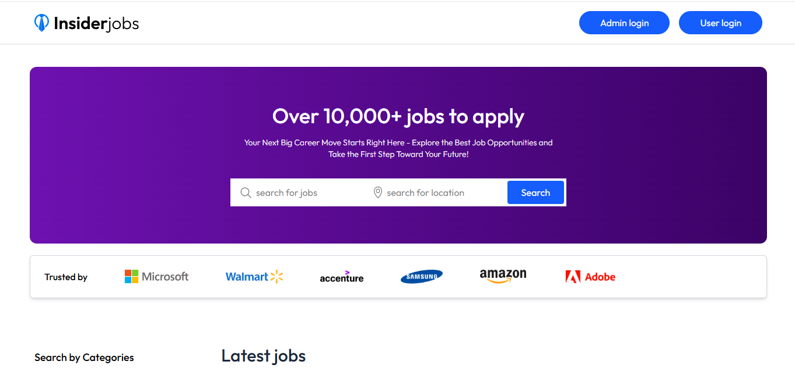
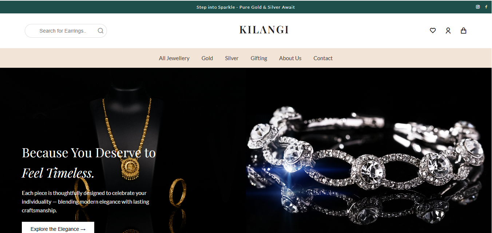
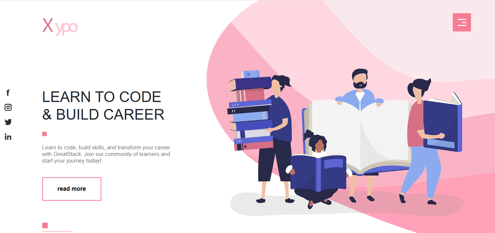
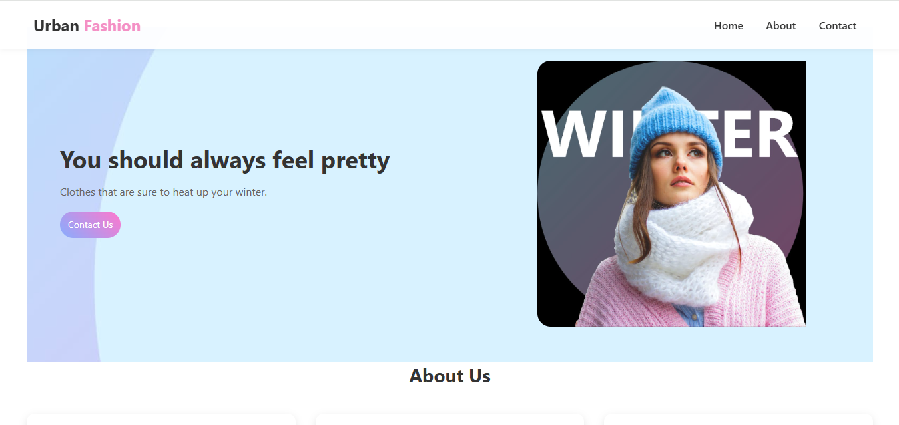
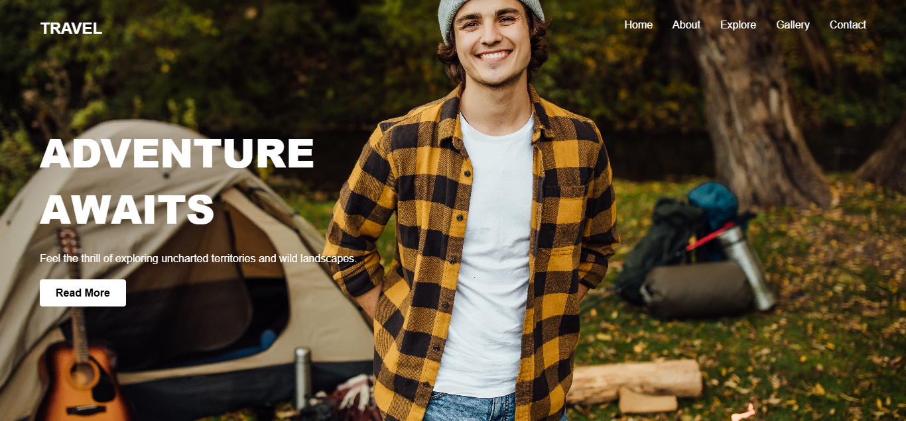
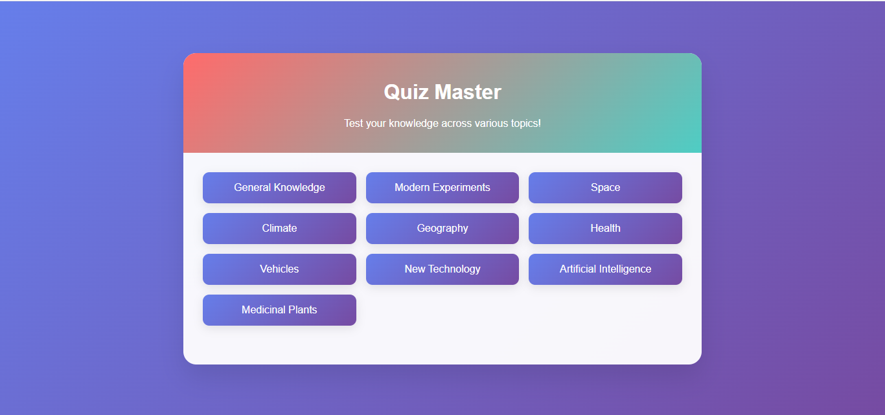
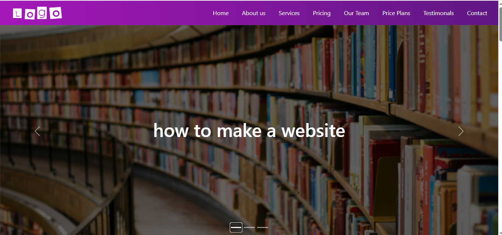
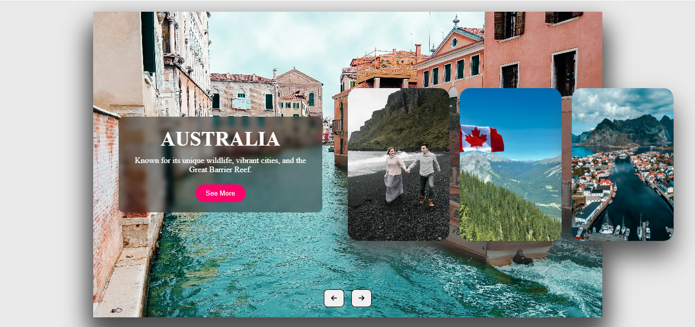
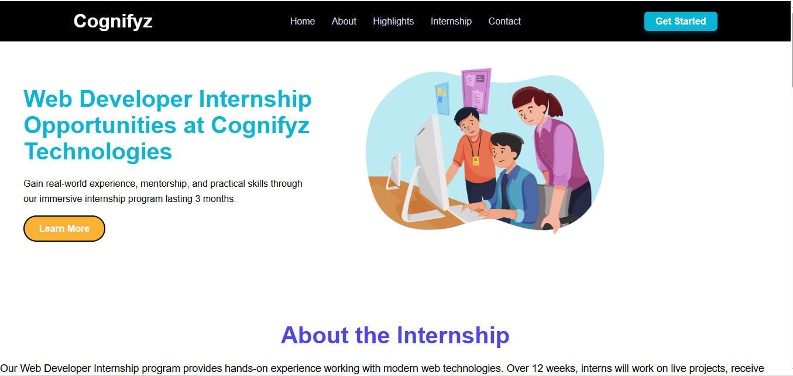

A modern job portal website with user authentication, job search functionality, and responsive design.
Languages used:

A modern jewellery showcase website designed to present elegant gold and silver collections with a clean user interface and smooth navigation for exploring different jewellery categories.
Languages used:

A modern educational landing page designed to encourage users to learn programming and build career skills through an engaging and visually appealing interface.
Languages used:

A stylish fashion landing page designed to showcase modern clothing collections and promote seasonal trends with a clean and visually appealing interface.
Languages used:

A visually engaging travel landing page designed to inspire users to explore new destinations, showcasing adventure experiences and outdoor travel opportunities.
Languages used:

An interactive quiz application that allows users to test their knowledge across multiple topics such as science, technology, geography, and general knowledge through a simple and engaging interface.
Languages used:

An engaging landing page for a freelancer to showcase their services, skills,and encourage user engagement.
Languages used:

An interactive travel website featuring a dynamic destination slider that showcases popular locations and highlights unique attractions to inspire users to explore new places.
Languages used:

A professional internship landing page designed to showcase web developer internship opportunities, program details, and learning benefits for students interested in gaining real-world development experience.
Languages used:
